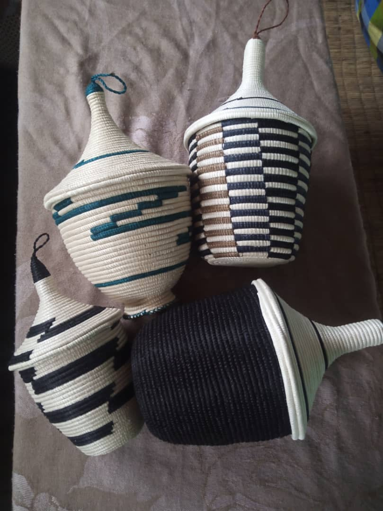
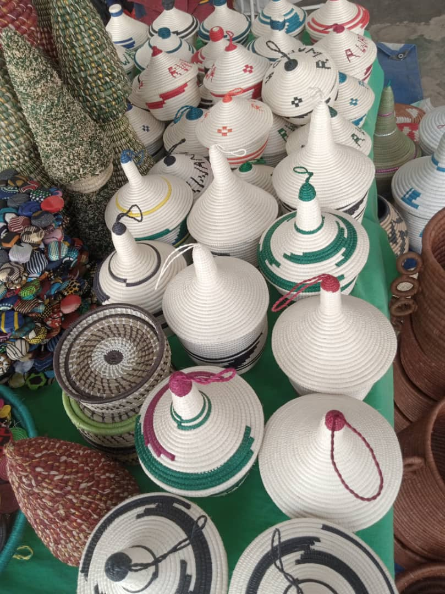
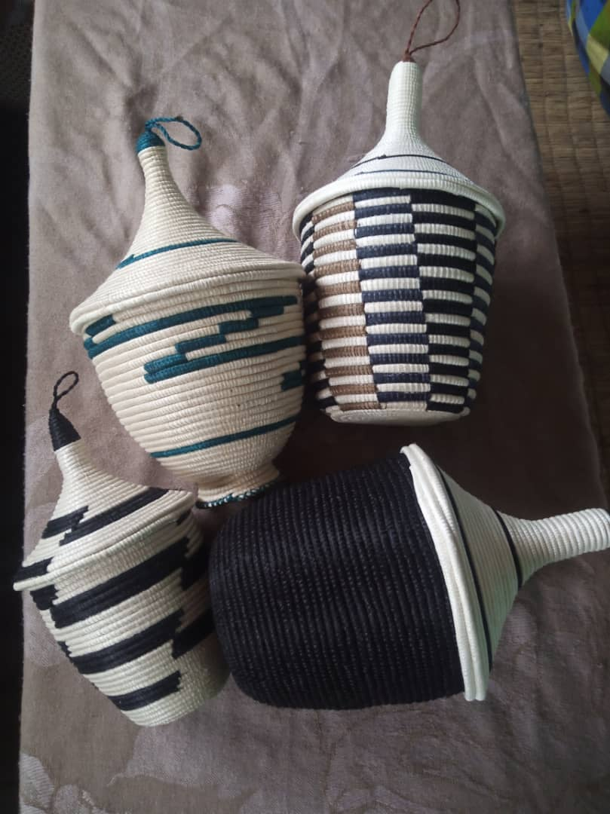
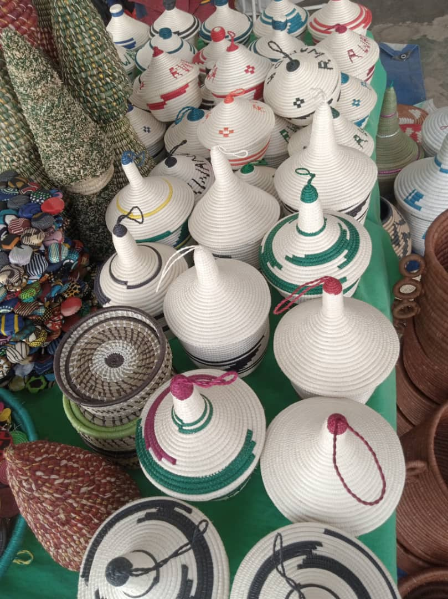

URUNGANO KARENGE Cooperative is a dynamic cooperative exclusively composed of female artisans, showcasing the resilience and talent of women entrepreneurs.
Situated in the heart of Rukoli, Karenge, Rwamagana, this cooperative has a prime location, contributing to the local community through its artisanal endeavors.
For precise navigation, you can find URUNGANO KARENGE Cooperative at this detailed location on Google Maps.
For inquiries or collaboration opportunities, feel free to contact URUNGANO KARENGE Cooperative at 0785466305.
As a hub of female creativity and entrepreneurship, URUNGANO KARENGE Cooperative stands as a testament to the empowering spirit of women in the Rwandan business landscape.
 


